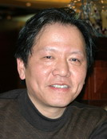
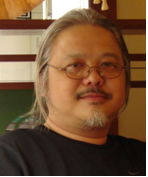

设计系
新闻与传播系
文化产业与管理系
电影与电视系
「设计系」
教授 特别研究员 退休教授:
顾惠忠
林迅
席涛
周宏
周武忠
顾振宇
刘国余
副教授:
陈贤浩
戴力农
丁希凡
傅炯
韩挺
孔繁强
李惠军
李钢
刘春荣
施健
徐庆华
吴正恭
尹亨建
张帆
张立群
讲师:
董占勋
李鹏程
马红冰
苏晓静
王宏卫
王炜
吴湛微
许亭方
萧冰
杨海勇
赵明
周年国
助教:
张湛
「教授」

顾惠忠，设计系教授，程及美术馆副馆长
个人简介: 1957年生于上海。1980毕业于上海戏剧学院舞台设计专业。现任教育部艺术类教育指导委员会委员；上海工业设计协会副理事长；上海设计中心副主任；上海包装技术协会包装设计专业委员会副主任；中国美术家协会会员；上海美术家协会会员；上海美术家协会粉画工作委员会副会长；中国图像图形学会数码艺术委员会委员；《上海包装》编委。
荣誉奖励: 上海交通大学年度考核优秀奖、二次荣获上海交通大学优秀教材特等奖、分别获得上海交通大学优秀教学成果一等奖和特等奖、上海市优秀教学成果三等奖、上海艺术人才奖教金“2005年度上海市优秀教师奖”。
代表成果: 出版多部著作，包括：《造型基础》、《专业基础》、《专业课程》、《纸质包装设计》、《设计与设计管理》等；在国内专业技术类核心期刊发表多篇论文，包括《Wilson体育用品的本土化包装设计》、《传统文化与现代包装》、《中国高校的广告教育》、《艺术的都市人、都市人的艺术》等；绘画作品入选第九、十、十一届全国美展，六次入选全国水彩粉画展；作品曾获全国“优秀作品奖，设计作品三次入选全国设计大展。
研究方向: 设计艺术理论与方法研究。

林迅 ，博士，设计系教授，博士生导师
个人简介: 1960年生，上海人。先后获得苏州大学艺术学院学士（1986）、清华大学美术学院硕士（1989）以及英国利兹大学设计学院博士学位（1995），并在1998年获得加拿大塞内卡学院数字媒体艺术中心研究生毕业证书及三维数字动画制作Maya国际认证书。从上世纪九十年代起，先后在英国、加拿大留学深造及工作，研究兴趣涉及符号文化及文化符号的数学观研究，重点集中在对称与图形创意以及基于交互的数字媒体艺术。学术研究基于艺术与科学应是完美融合一体的基本哲学观点。2003年底，作为海归留学学成人员受聘上海交通大学媒体与设计学院。
代表成果: 出版《对称与图形创意》专著（获2005年度上海交通大学学术专著出版基金资助）。发表论文多篇，主要有：《Symmetry in pattern and tiling》、《现代纤维艺术的审美思考》、《对称与图形创意——基于图形组织结构的数学原理与应用》、《Symmetry and Developing Ideas ——Construction-based approach to Geometry of Two-dimensional Pattern Design》、《人机交互技术在装置艺术中的应用》等。装置艺术“灵动水墨”（基于人机交互技术的装置艺术），荣获中国美术家协会、上海世博事务协调局联合主办的“世愽想象”2007上海美术大展设计艺术展优秀作品奖。
研究方向: 符号文化及文化符号的数学观研究，重点集中在对称与图形创意以及基于交互的数字媒体艺术（主要包括：交互装置艺术、影视动画、数字化展览展示设计，以及视觉传达领域）。
< 1 2 3 4 5 ... >